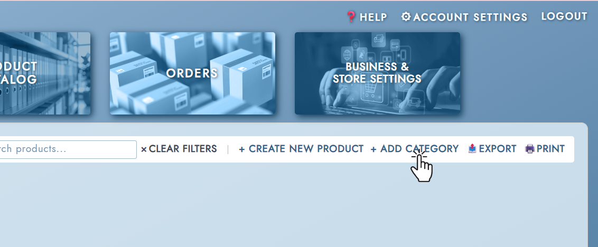

Categories are used to group your products on the storefront, making it easier for customers to browse your offerings. Before you can add a product to a category, the category must already exist.
To create a new category, navigate to the Categories section and click Add Category. Enter a Category Name — this must be unique across your catalog. You can also assign an optional Icon to the category, which will appear alongside the category name on the storefront. Click Save to create the category.
To edit an existing category, click Edit in its row. You can update the category name and icon. Click Save to apply your changes.
Renaming a category does not affect the products assigned to it — they remain associated with the category regardless of the name change.
Products are assigned to categories through the product form. Every product must belong to exactly one category — it is a required field when creating or editing a product.
To change the category a product belongs to, open the product in the catalog using the Edit button, select a different category from the Category dropdown, and click Update Product to save.
To delete a category, click Delete in its row and confirm the action when prompted.
A category cannot be deleted while it still has products assigned to it. If you need to remove a category that is in use, first reassign or delete all products in that category, then return to delete it.
↑ Back to top